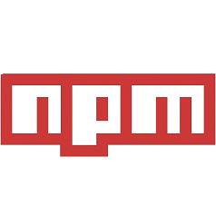

FRONT-END
Tecnologias que transformam ideias em interfaces intuitivas e responsivas. Do layout à interatividade, cada ferramenta contribui para uma experiência visual fluida e envolvente.
Me chamo Rafael, sou um desenvolvedor Front-End certificado em busca de me tornar Full-Stack. Apaixonado por tecnologia, estudo constantemente e crio projetos próprios para evoluir e acompanhar as tendências do mercado.

Tecnologias que transformam ideias em interfaces intuitivas e responsivas. Do layout à interatividade, cada ferramenta contribui para uma experiência visual fluida e envolvente.

O núcleo da aplicação, responsável pelo processamento, lógica e comunicação com o banco de dados. Aqui, os dados ganham estrutura e as funcionalidades acontecem nos bastidores.
Manter o controle do código é essencial. Com ferramentas de versionamento, é possível registrar mudanças, colaborar em equipe e garantir a integridade do projeto em qualquer fase do desenvolvimento.
Escrever código vai além de fazê-lo funcionar. Aplicar boas práticas como modularização, código limpo e princípios sólidos garante legibilidade, escalabilidade e manutenção eficiente no longo prazo.
Embora meu foco profissional esteja no desenvolvimento Full-Stack, minha formação e sensibilidade vão muito além da lógica e do código.
Carrego comigo uma bagagem artística que influencia diretamente minha maneira de criar, pensar e resolver problemas.
Tenho paixão pelo desenvolvimento de jogos, — exatamente o tipo de desafio que me move.
Ao longo dos anos, construí um portfólio extenso de criações nas áreas de ilustração, música e no desenvolvimento de jogos, explorando técnicas com um nível técnico refinado.
A arte é uma linguagem que utilizo frequentemente para complementar minha visão criativa e expressar ideias de forma única.